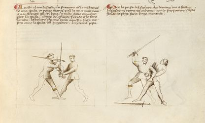

HEMA
HEMA es una disciplina moderna dedicada al estudio y práctica de artes marciales históricas de Europa. Estas artes de combate fueron desarrolladas y perfeccionadas a lo largo de los siglos por diferentes maestros de armas, desde la edad media y el renacimiento hasta la era Victoriana. Muchos de ellos eligieron plasmar por escrito sus enseñanzas en manuscritos y tratados, de los cuales un gran número sobrevive hasta el día de hoy (muchos de ellos accesibles incluso de forma gratuita).
Lamentablemente no existe un linaje vivo desde aquellos maestros hasta nuestros días, pero el material escrito que nos dejaron nos permite intentar revivir sus refinadas artes marciales. Ciertamente nuestras interpretaciones modernas nunca van a ser perfectas, pero se trata de un proceso en el cual se combinan el estudio de las fuentes, con la práctica guiada y la puesta a prueba en combate libre (con protección). Este proceso nos permite aprender y perfeccionar nuestras interpretaciones y habilidades, al mismo tiempo mejorando el cuerpo y el conocimiento.
El lado más práctico de HEMA abarca actividades como el combate libre (con espadas de práctica y equipo de protección moderno), ejercicios controlados de a pares con mayor o menor nivel de libertad, y ejercicios individuales. El objetivo es desarrollar las habilidades necesarias para poder ejecutar correctamente las técnicas que componen estas artes marciales, especialmente en un entorno donde el oponente está activamente intentando vencernos (es decir, no coreografías, sino competencia o combate). Este lado incluye también una rama deportiva altamente competitiva, con torneos donde podemos poner a prueba tanto las habilidades desarrolladas como nuestras interpretaciones de las fuentes.
Y por otra parte pero no menos importante, HEMA incluye el aspecto académico del estudio de estos manuscritos y tratados, además de las herramientas del arte (armas, armaduras), y su contexto histórico, para informar y orientar nuestras interpretaciones.